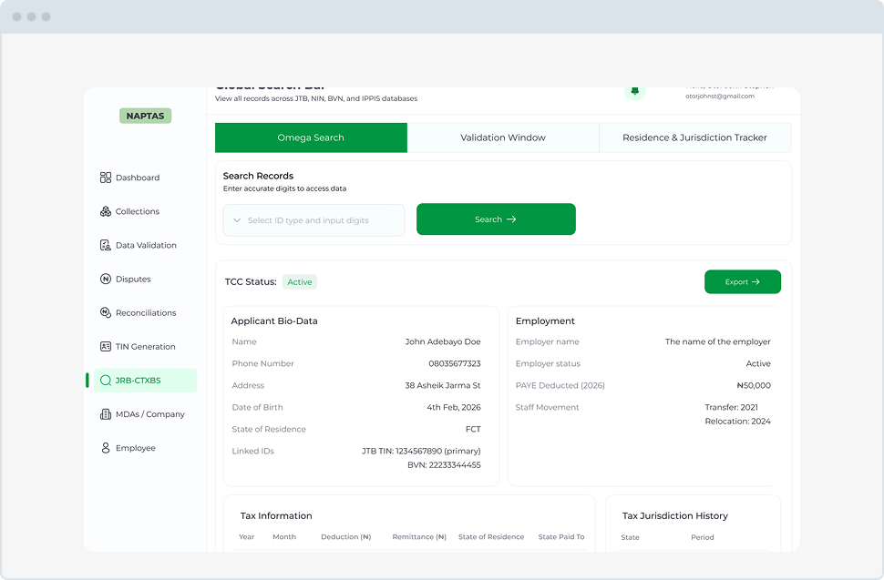

State PAYE Actualization
Project Design Engineer
2026
The state government was losing tax revenue because it lacked a system to verify which federal employees actually lived in the State and track if their PAYE taxes were remitted correctly. I designed an enterprise-level SaaS portal that connects state tax officers with federal agencies. I built workflows for bulk payroll uploads, automated variance detection, and a dispute resolution pipeline.

Key Accomplishments
- Built automated workflows for bulk payroll file ingestion and instant variance detection.
- Created a clear dispute resolution pipeline to manage communication between state and federal agencies.
- Delivered high-level executive scorecards tracking compliance rates, missing funds, and revenue recovery.


More Projects

Omega Search Interface
Designed a unified search platform that aggregates scattered taxpayer data, allowing tax auditors to view complete financial profiles and flag liabilities in seconds.
View Project
DiabeCare Mobile App
The goal was to create a user-friendly lifestyle companion app for individuals managing diabetes, addressing their day-to-day challenges with personalized tools.
View Project